정보통신산업기사 (2005-05-29 기출문제)
1과목: 디지털전자회로
1. 변조도 60[%]인 진폭변조 회로에서 반송파의 평균출력이 300[㎽]일 때 피변조파의 평균 출력은?
- 180[㎽]
- 300[㎽]
- 354[㎽]
- 420[㎽]
(정답률: 알수없음)

2. 미분회로에 삼각파를 입력했을 때 출력파형은?
- 정현파
- 여현파
- 삼각파
- 구형파
(정답률: 알수없음)
3. 다음 중 레지스터(register)의 기능은?
- 펄스(pulse) 발생기이다.
- 카운터의 대용으로 쓰인다.
- 회로를 동기시킨다.
- 데이터(data)를 일시 저장한다.
(정답률: 알수없음)
4. 그림과 같은 회로의 명칭은?
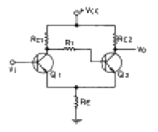
- 슈미트트리거회로
- 차동증폭회로
- 푸슈풀증폭회로
- 부트스트랩회로
(정답률: 알수없음)
5. 시간폭과 진폭이 일정한 펄스의 시간적 위치를 신호파의 파형에 대응하여 변화시키는 펄스 변조방식은?
- PAM
- PPM
- PCM
- PNM
(정답률: 알수없음)
6. 연산 증폭기(OP Amp)의 특징으로서 맞는 것은?
- 전압 이득이 적다.
- 입력 임피던스가 낮다.
- 출력 임피던스가 높다.
- 주파수대역이 크다.
(정답률: 알수없음)
7.
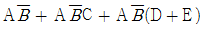
를 간단히 하면?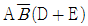
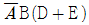
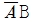
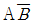
(정답률: 알수없음)
8. 쌍안정 멀티바이브레이터의 결합저항에 병렬로 부가한 콘덴서의 사용 목적은?
- 증폭도를 높인다.
- 스위칭 속도를 높인다.
- 베이스 전위를 일정하게 유지시킨다.
- 에미터 전위를 일정하게 유지시킨다.
(정답률: 알수없음)
9. 다음 회로의 출력전압은 얼마인가?
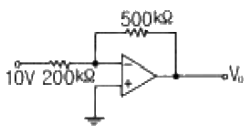
- -5[V]
- -10[V]
- -15[V]
- -25[V]
(정답률: 알수없음)
10. 다음에 열거한 인터페이스의 종류 중에서 회선의 개수가 많지만 속도가 가장 빠른 인터페이스는?
- SISO
- SIPO
- PISO
- PIPO
(정답률: 알수없음)
11. 회로내의 분포용량, 표유 인덕턴스 또는 회로 정수의 불평형에 의하여 증폭하려는 주파수와 다른 주파수간에 발진이 생기는 현상은?
- 자기 발진
- 이완 발진
- 다이나트론 발진
- 기생 발진
(정답률: 알수없음)
12. 반가산기(Half-adder)의 구성 요소로 맞는 것은?
- JK 플립플롭
- 두개의 AND 게이트
- EOR과 AND 게이트
- 1개의 반동시 회로와 OR 게이트
(정답률: 알수없음)
13. 그림과 같은 회로에서 입력임피던스의 근사값은? (단, 입력임피던스는 TR의 베이스와 접지간을 의미하며, TR의 hie = 1[㏀], hfe = 50 이다.)
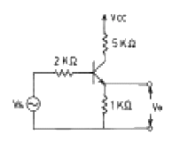
- 52[㏀]
- 62[㏀]
- 82[㏀]
- 100[㏀]
(정답률: 알수없음)
14. 다음과 같은 NOR GATE로 구성된 기본적인 플립-플롭회로에 서 S=1, R=0 인 상태일 때 Q, Q'의 상태는?
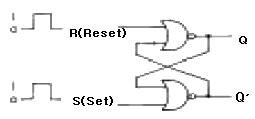
- 1, 0
- 0, 1
- 0, 0
- 1, 1
(정답률: 알수없음)
15. 다음 카아르노프도의 간략식은?
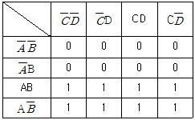
- Y = A
- Y = B
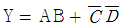
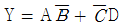
(정답률: 알수없음)
16. 다음 회로에서 Re의 값과 관계가 없는 사항은? (단, 출력전압 및 전류는 콜렉터측임)
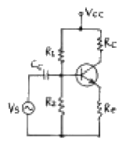
- Re가 크면 클수록 입력 임피이던스는 커진다.
- Re가 크면 클수록 안정계수 S는 적어진다.
- Re가 크면 클수록 증폭된 콜렉터 전류는 적어진다.
- Re가 크면 클수록 전압증폭도는 커진다.
(정답률: 알수없음)
17. FET를 사용한 이상(phase shift) CR발진기에서 발진을 지속하기 위해 FET의 증폭도는 최소 얼마 이상이어야 하는가?
- 10
- 29
- 100
- 156
(정답률: 알수없음)
18. RC결합 저주파 증폭회로의 이득이 낮은 주파수에서 감소되는 이유는?
- 출력회로의 병렬 캐패시턴스 때문
- 에미터 저항 때문
- 콜렉터 저항 때문
- 결합 캐패시턴스의 영향 때문
(정답률: 알수없음)
19. 제너 다이오드를 주로 사용하는 회로는?
- 증폭회로
- 검파회로
- 전압안정회로
- 저주파발진회로
(정답률: 알수없음)
20. 그림과 같은 게이트 회로의 명칭은?
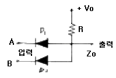
- NOR 회로
- AND 회로
- OR 회로
- NAND 회로
(정답률: 알수없음)
2과목: 정보통신기기
21. 전자교환 시스템의 통화로 단말회로의 공통된 기능이 아닌 것은?
- 발신호 검출
- 통화전류 공급
- 통화로 유지
- 통화로계 운용모드 관리
(정답률: 알수없음)
22. 컴퓨터시스템에 입력시키고 그 결과를 사람의 음성으로 출력시켜서 인간에게 전달하는 음성입출력장치 중에서 직접적으로 음성파형을 만드는 장치는?
- 음성인식기
- 음성합성기
- 음성입력기
- 음성분석기
(정답률: 알수없음)
23. CCTV(폐쇄회로 TV)의 특성을 설명한 내용이 아닌 것은?
- 불특정 다수인 일반 가입자를 대상으로 하는 통신 시스템이다.
- 호텔, 병원, 학교 등 특정 대상에 대해 특정 프로그램을 제공하는 시스템이다.
- 공장, 은행, 백화점 및 사람이 접근할 수 없는 산업현장의 감시용 시스템이다.
- 시스템의 기본 구성은 촬상장치, 전송장치, 표시장치, 기록장치로 되어 있다.
(정답률: 알수없음)
24. DTE와 디지털 데이터 교환 회선망을 접속하기 위한 DSU의 기능에 알맞지 않은 것은?
- 신호 파형의 변환
- 신호 전송속도의 변환
- 제어 신호의 삽입
- 프레임의 시분할 다중화
(정답률: 알수없음)
25. 위성통신의 특징이 아닌 것은?
- 많은 통신용량을 가지고 있다.
- 전송 오류율이 감소한다.
- SHF 주파수를 사용한다.
- 고품질의 협대역 통신이 가능하다.
(정답률: 알수없음)
26. 주파수 분할 다중화기에서는 다중신호는?
- 시간을 분할하여 전송한다.
- 공동대역폭을 나누어서 전송한다.
- 다중코딩을 사용하여 전송한다.
- 디지털 신호로 변조한다.
(정답률: 알수없음)
27. 문자나 도형을 입력하기 위하여 평면 모양으로 구성된 입력면내를 지시 펜으로 지시함으로서 그 위치 정보를 입력할 수 있는 입력기기는?
- OCR
- 바코드 리더
- 스캐너
- 태블릿
(정답률: 알수없음)
28. 일반적인 무선송신기의 기본적인 구성을 가장 옳게 나타낸 것은?
- 발진부, 증폭부, 체배부, 전원부
- 발진부, 변조부, 증폭부, 전원부
- 전원부, 증폭부, 체배부, 안테나부
- 발진부, 체배부, 복조부, 전원부
(정답률: 알수없음)
29. TV 방송전파를 이용하여 TV 방송과 함께 문자 또는 도형 형태의 정보를 제공하는 정보통신 서비스는?
- 텔리텍스
- 팩시밀리
- 텔리텍스트
- 위성통신
(정답률: 알수없음)
30. CATV의 특징 중 옳은 것은?
- 쌍방향 통신의 서비스가 가능하다.
- 채널의 수가 극히 제한된다.
- 홈뱅킹등 정보화가 불가하다.
- 전송은 공중 전기 통신망을 이용한다.
(정답률: 알수없음)
31. 고속 동기식 모뎀과 시분할 다중화기를 하나의 장비로 만든 것으로 모뎀의 최대 전송 속도 이내에서 각 포트가 전송속도를 나누어 사용할 수 있는 모뎀은 무엇인가?
- 멀티포인트(multi-point) 모뎀
- 멀티포트(multi-port) 모뎀
- 제한 거리 모뎀
- 멀티채널(multi-channel) 모뎀
(정답률: 알수없음)
32. 디지탈신호 재생중계기의 기능에 해당되지 않는 것은?
- 에러정정
- 타이밍
- 파형등화
- 식별재생
(정답률: 알수없음)
33. 검색형 AV(Audio Visual)분류에서 상호 정보 교환을 취급하는 것은 AVI서비스시스템인데, 다음 중 AVI시스템이 취급하는 미디어 종류를 맞게 연결한 것은?
- 지각 대상 미디어 : 상호교환 정보의 데이터 타입
- 축척미디어 : 이용자가 알 수 있는 정보의 모습, 음악, 회화, Texe 및 정지 화상 등
- 표현미디어 : 데이터의 축척 수단인 FD, HD, 광디스크
- 전송미디어 : 데이터 전달의 물리적 수단인 2P케이블, 동축케이블, 광 Fiber 등
(정답률: 알수없음)
34. 다음 중 멀티미디어 시스템을 만들 때 고려할 사항으로 관계가 적은 것은?
- 집적화
- 표준화
- 동기화
- 다중화
(정답률: 알수없음)
35. 정보단말기로서 휴대전화기능, 휴대형 컴퓨터기능, 팩스기능, 전자수첩기능을 갖춘 단말기는?
- PC-FAX
- PDA
- PCS
- MIX-MODE
(정답률: 알수없음)
36. 변복조기 공동이용기와 선로공동이용기에 대한 설명 중 옳은 것은?
- 변복조기 공동이용기와 선로공동이용기는 폴/셀렉트 프로토콜을 이용한다.
- 집중화기보다 네트워크구성이 복잡하고, 소프트웨어의 기능이 다양하다.
- 변복조기 공동이용기는 원거리에서 사용되고, 선로공동이용기는 근거리에서 사용된다.
- 변복조기 공동이용기는 타이밍소스가 있고 선로공동이용기는 내부에 타이밍소스가 없다.
(정답률: 알수없음)
37. 수신기의 성능을 측정하는 변수가 아닌 것은?
- 감도
- 선택도
- 변조도
- 충실도
(정답률: 알수없음)
38. 이동 통신 망의 주요 기능인 위치 등록이 수행 되는 경우가 아닌 것은?
- 전원을 끌 때 등록
- 위치 영역 변경 등록
- 단말기를 수리하기 위하여 등록
- 거리 기준 등록
(정답률: 알수없음)
39. 다음은 문자표시 단말장치중 CRT 단말기의 4가지 기본적인 용도를 설명한 것이다. 용도와 거리가 먼 것은?
- 감시관리
- 데이터 검색
- 프로토콜 변환
- 질의 응답
(정답률: 알수없음)
40. ATM교환방식의 설명중 옳지 않은 것은?
- 정적으로 대역폭을 할당한다.
- 셀을 53바이트로 세분화하여 유연성을 갖게 한다.
- 모든 정보의 통합화된 서비스가 가능하다.
- 현재 제공중인 서비스와 앞으로 요구될 서비스의 융통성을 확보할 수 있다.
(정답률: 알수없음)
3과목: 정보전송개론
41. 전송제어의 5단계 중 4단계는?
- 회선의 접속
- 링크의 설정
- 링크의 해제
- 정보의 전송
(정답률: 알수없음)
42. 중계선로의 잡음레벨을 측정한 결과 잡음전압이 0.02[V]이고, 통화전압이 2[V]라면 신호대 잡음비는 얼마인가?
- 40[dB]
- 20[dB]
- 60[dB]
- 30[dB]
(정답률: 알수없음)
43. 전송제어 문자의 설명이 틀린 것은?
- STX : 텍스트의 시작을 표시한다.
- ETB 블록의 완료를 표시한다.
- ENQ : 질의가 끝났음을 알린다.
- SOH : 헤딩의 시작을 표시한다.
(정답률: 알수없음)
44. 최근에 많이 사용되고 있는 xDSL 관련 기술을 보기에 열거하였다. 이중에 상, 하향 속도가 같은 대칭적인 전송서비스가 가능한 기술만을 바르게 나타낸 것은?
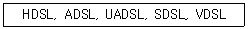
- ADSL, VDSL
- ADSL, HDSL
- VDSL, UADSL
- SDSL, HDSL
(정답률: 알수없음)
45. PCM 변환과정을 올바르게 나타낸 것은?
- 양자화 → 표본화 → 부호화
- 양자화 → 부호화 → 표본화
- 표본화 → 양자화 → 부호화
- 표본화 → 부호화 → 양자화
(정답률: 알수없음)
46. 다음 그림의 전송방식은?
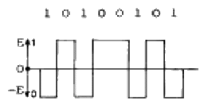
- 단류 NRZ 방식
- 복류 NRZ 방식
- 단류 RZ 방식
- 복류 RZ 방식
(정답률: 알수없음)
47. 전송로에서 사용되는 재생중계기의 3R 기능이 아닌 것은?
- 식별재생
- 타이밍 재생
- 파형정형
- 신호전송
(정답률: 알수없음)
48. 균일 양자화 PCM 에서 양자화를 위한 비트를 1개씩 추가할 때마다 개선되는 신호대 양자화 잡음전력비는 몇[dB]씩 개선되는가?
- 3
- 4
- 6
- 8
(정답률: 알수없음)
49. 우수 패리티를 가진 해밍 코우드에서 착오는 몇번 행에 있는가?
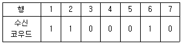
- 3
- 5
- 6
- 7
(정답률: 알수없음)
50. 전송 기술에 대한 분류가 잘못된 것은?
- 전송 방향에 따른 전송 방식 : 단향 통신, 반이중 통신, 전이중 통신
- 동기 방법에 따른 전송 방식 : 비동기식 전송, 동기식전송, 혼합형 동기 전송
- 아날로그 전송 방식 : 기저대역(base band) 전송, 비트동기식 전송, 문자 동기식 전송
- 회선 구성에 따른 전송 방식 : 포인트-투-포인트 방식, 멀티 포인트 방식
(정답률: 알수없음)
51. OSI-7 통신 프로토콜의 각 계층별 설명 중 잘못된 것은?
- 제2계층(물리 계층) : 물리적 연결, 활성화와 비활성화
- 제3계층(네트웍 계층) : 통신망 내 및 통신망 사이의 경로선택과 중계기능
- 제4계층(트랜스포트 계층) : 종단 상호간의 에러검출 및 서비스 품질 감시
- 제5계층(세션 계층) : 회화관리 및 동기 기능 수행
(정답률: 알수없음)
52. 신호대 잡음의 비가 15이고, 대역폭이 3400[Hz]라고 하면 통신용량은 몇[bps]인가?
- 11500
- 12500
- 12900
- 13600
(정답률: 알수없음)
53. HDLC 프로토콜에서 사용되는 국(station)의 이름을 바르게 나타낸 것은?
- 주국, 종국, 종속국
- 총괄국, 집중국, 단국
- 1차국, 2차국, 복합국
- 상위국, 중간국, 하위국
(정답률: 알수없음)
54. 동축케이블에서 가장 감쇠를 적게 하기 위해서는 내부도체의 외경(d)과 외부도체의 내경(D)과의 비(ratio) D/d의 값을 얼마로 만드는 것이 가장 좋은가?
- 1.8
- 3.6
- 5.8
- 7.2
(정답률: 알수없음)
55. 다음 디지털 변조 방식중 가장 빠른 데이터 전송에 적용될 수 있는 방식은?
- QAM
- FSK
- PSK
- ASK
(정답률: 알수없음)
56. 발광소자에서 파장이 다른 광신호를 광결합기로 결합하여 전송하고 광분파기로 분리하는 다중화방식은?
- FDM
- TDM
- SDM
- WDM
(정답률: 알수없음)
57. 전송로에 디지탈 신호를 양극 부호펄스 형태로 전송 시키는 가장 큰 이유는?
- 직류성분을 추가한다.
- 타이밍 신호를 넣을 수 없다.
- 직류성분이 없다.
- 연속하는 0을 취급하지 않는다.
(정답률: 알수없음)
58. 단일모드 광섬유(single mode fiber)에 대한 다음 설명 중 틀린 것은?
- 색분산이 존재한다.
- 모드가 한 개밖에 존재하지 않아 고속, 대용량 전송이 어렵다.
- 제조 및 접속이 어렵다.
- 모드간 간섭이 없다.
(정답률: 알수없음)
59. 다음 PSK(Phase Shift Keying)방식의 특징에 대한 설명 중 틀린 것은?
- 디지털신호 0 또는 1에 따라 반송파의 위상을 변화 시킨다.
- ASK보다 속도가 높은 데이터 전송에 사용된다.
- ASK, FSK에 비해 에러 확률이 적다.
- 케리어주파수가 일정하여 costas loop가 필요 없다.
(정답률: 알수없음)
60. 이동통신의 채널에서 일어나는 현상이 아닌 것은?
- 도플러 현상
- 표피효과
- 지연확산
- 페이딩
(정답률: 알수없음)
4과목: 전자계산기일반 및 정보설비기준
61. 다음 중 컴퓨터에서 뺄셈 연산 수행시 주로 사용되는 것은?
- 엔코드(encoder)
- 디코드(decoder)
- 보수기
- 누산기
(정답률: 알수없음)
62. 기억장치에 정보를 기억시키거나 기억된 내용을 읽어내는데 소요되는 시간은?
- access time
- seek time
- search time
- run time
(정답률: 알수없음)
63. 다음 중 중앙처리장치의 개입없이 기억장치와 외부장치간에 직접 자료를 전달할 수 있는 것은?
- 인터럽트(Interrupt)
- 풀링(Polling)
- 스풀링(Spooling)
- DMA(Direct Memory Access)
(정답률: 알수없음)
64. 다음 중 고급언어로 쓴 프로그램을 기계어로 처리할 수 있는 Code 의 프로그램으로 번역하기 위한 Program은?
- Processor
- Generator
- Compiler
- 자동번역기
(정답률: 알수없음)
65. 캐시 메모리를 사용하는 이유로 가장 타당한 것은?
- 평균 액세스 시간을 증가시키기 위하여 사용한다.
- 프로그램의 총 실행 시간을 단축시킬 수 있다.
- 기억 용량을 증가시키기 위하여 사용한다.
- 주기억장치를 대체하기 위하여 사용한다.
(정답률: 알수없음)
66. 컴퓨터 시스템에서 보통 0-주소, 1-주소, 2-주소, 3-주소로 분류할 때 기준이 되는 것은?
- 명령어의 수
- 오퍼랜드의 수
- 레지스터의 수
- 기억 장치의 수
(정답률: 알수없음)
67. 2진수 1001의 1의 보수에 해당하는 것은?
- 0001
- 0110
- 0111
- 0101
(정답률: 알수없음)
68. 2개 이상의 프로그램을 단일 계산기에서 동시에 실행하는 방법을 무엇이라 하는가?
- Multi Programming
- Double Programming
- Multi accessing
- Processing Programming
(정답률: 알수없음)
69. 블록과 블록 사이를 구분 짓는 공백은?
- 스페이스
- IRG
- 필드
- IBG
(정답률: 알수없음)
70. 32비트로 2의 보수법을 사용하여 표현할 때 최대로 표현할 수 있는 양수의 범위는?
- 232
- 232-1
- 231
- 231-1
(정답률: 알수없음)
71. 통신용 관로의 매설시 가스관 등 다른 매설물과의 간격을 얼마 이상으로 유지하여야 하는가?
- 30㎝ 이상
- 50㎝ 이상
- 1m 이상
- 1.5m 이상
(정답률: 알수없음)
72. 다음 중 전기통신사업법의 가장 적합한 설명은?
- 국가 전기통신의 주권을 규정한 법률이다.
- 전기통신사업의 운영을 위한 기본원칙을 규정한다.
- 전기통신설비의 설치 및 보전을 위한 부령이다.
- 통신사업자의 건전한 육성 발전을 위한 약관이다.
(정답률: 알수없음)
73. 전기통신설비 및 전기통신 기자재에 관한 기술기준은 어느 법령에 규정함을 원칙으로 하는가?
- 법률이다.
- 대통령령이다.
- 국무총리령이다.
- 정보통신부령이다.
(정답률: 알수없음)
74. 정보통신부장관으로부터 전기통신에 관한 표준화 업무를 위탁받은 기관은?
- 한국소프트웨어진흥원
- 한국통신
- 한국정보통신기술협회
- 한국전산원
(정답률: 알수없음)
75. 다음 중 정보통신정책심의위원회의 심의대상 주요정책이 아닌 것은?
- 전기통신기본계획
- 기술진흥시행계획
- 기간통신사업의 허가
- 전기통신설비의 변경신고
(정답률: 알수없음)
76. 정보통신공사업자 이외의 자가 시공할 수 없는 공사는?
- 데이터단말기 설치공사
- 구내교환기 설치공사
- 전화기 설치공사
- 아마추어국 무선설비 설치공사
(정답률: 알수없음)
77. 다음 중 정보통신공사업법령에 의한 정보통신공사가 아닌 것은?
- 전화국의 수전설비 설치공사
- 경부고속철도의 정보통신시스템 설치공사
- 이동통신회사의 기지국과 교환기를 광케이블로 연결하는 공사
- 아파트 지하주차장의 방범을 위한 폐쇄회로 텔레비전(CCTV) 설치공사
(정답률: 알수없음)
78. 다음 중 비트오율을 바르게 설명한 것은?
- 통신회선의 중심점과 대지와의 사이에 발생되는 전압
- 하나의 전력을 1밀리와트에 대한 대수비로 표시한 것
- 송신된 비트수에 대한 잘못 수신된 비트수의 비율
- 전신부호의 소자의 길이가 늘어나거나 짧아지는 비율
(정답률: 알수없음)
79. 기간통신사업자가 전기통신설비의 설치와 보전시 필요한 토지 등의 일시 사용기간은?
- 30일 이내
- 3월 이내
- 60일 이내
- 6월 이내
(정답률: 알수없음)
80. 우리나라의 전기통신에 관한 사항의 관장은 누가 하는가?
- 대통령
- 정보통신부장관
- 한국통신사장
- 전기통신사업자
(정답률: 알수없음)
반송파의 평균 출력이 300[㎽]이므로, 반송파의 최대 출력은 600[㎽]가 됩니다.
피변조파의 최대 출력은 최대 진폭의 제곱을 반송파의 최대 출력으로 나눈 후 2를 곱한 값입니다. 따라서,
피변조파의 최대 출력 = (1.2V)^2 / 600[㎽] * 2 = 354[㎽]
따라서, 정답은 "354[㎽]"입니다.